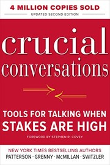
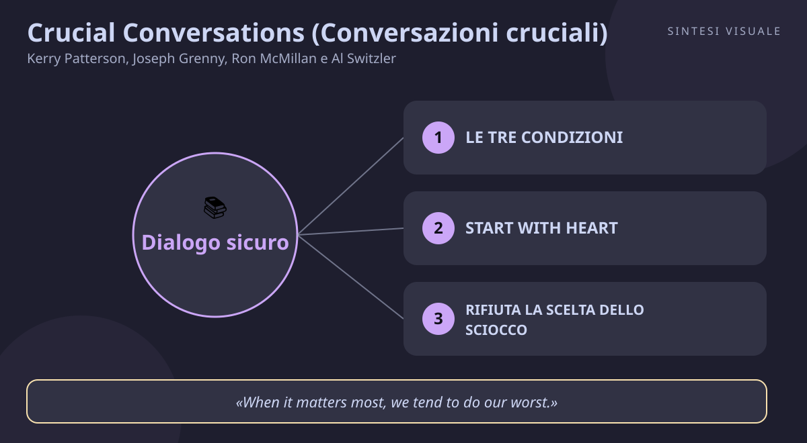

Home / Libri / Crucial Conversations (Conversazioni cruciali)

Crucial Conversations (Conversazioni cruciali)
Kerry Patterson, Joseph Grenny, Ron McMillan e Al Switzler · Persuasione e comunicazione
«Crucial Conversations (Conversazioni cruciali)»
- Start with Heart
- Silenzio e violenza
- Scopo comune
- Metodo STATE
📘Riassunto
La scintilla centrale. Quando la posta è alta, le opinioni divergono e le emozioni si accendono, quasi tutti crollano: tacciono per paura o aggrediscono per imporsi. Quando conta di più, diamo il peggio: gli autori, che hanno studiato per anni le persone capaci di restare lucide sotto pressione, sostengono che esiste una terza via — il dialogo — e che si può imparare con un metodo preciso.
La struttura logica. Il libro definisce anzitutto la "conversazione cruciale" dalle sue tre condizioni (posta alta, opinioni diverse, emozioni forti) e il suo cuore teorico: il pool del significato condiviso, lo spazio mentale comune in cui far confluire fatti, opinioni ed emozioni di tutti, perché solo da un pool pieno nascono decisioni migliori e impegni mantenuti. Poi insegna le abilità in sequenza: parti dal cuore (chiarisci cosa vuoi davvero), impara a guardare i segnali di pericolo, rendi sicuro il dialogo, domina le storie che ti racconti, esponi il tuo percorso con il metodo STATE, esplora quello altrui con l'ascolto AMPP, e infine trasforma il dialogo in azione.
Il punto di svolta. Il problema non è mai (solo) il contenuto del disaccordo: è la sicurezza. Quando le persone non si sentono al sicuro, smettono di contribuire al pool — scivolando nel silenzio o nella violenza — e nessuna tecnica argomentativa può funzionare finché la sicurezza non viene ripristinata con scopo comune e rispetto reciproco.
L'eredità oggi. Il metodo è diventato un programma di formazione seguito da milioni di persone in tutto il mondo e adottato da quasi metà delle grandi aziende globali; sta accanto a Difficult Conversations e Never Split the Difference nel canone della comunicazione professionale, e la prefazione della prima edizione fu firmata da Stephen Covey, che lo definì uno dei contributi più importanti del pensiero manageriale del nostro tempo.
💡Concetti chiave
- Le tre condizioni: una conversazione diventa cruciale quando posta alta, opinioni diverse ed emozioni forti si presentano insieme.
- Start with Heart: prima di parlare, chiarisci cosa vuoi davvero per te, per l'altro e per la relazione.
- Rifiuta la scelta dello sciocco: non devi scegliere tra sincerità e gentilezza; cerca la strada che tiene insieme entrambe.
- Silenzio e violenza: sono i due segnali che la sicurezza è crollata e il dialogo si è fermato.
- Scopo comune e rispetto reciproco: le due condizioni che rendono sicuro il dialogo e lo fanno ripartire.
- Domina le tue storie e usa STATE + AMPP: separa i fatti dalle storie che ti racconti, esponi la tua posizione partendo dai fatti e ascolta davvero l'altro, poi trasforma tutto in impegni concreti.
📖1. Le tre condizioni
- Definizione una conversazione è "cruciale" quando si verificano insieme tre ingredienti: la posta in gioco è alta (una promozione, un rapporto, dei soldi), le opinioni divergono e le emozioni si accendono. Il paradosso scoperto dagli autori è che proprio in questi momenti — quando servirebbe la nostra versione migliore — l'adrenalina ci dirotta verso lotta o fuga e diamo il peggio.
- Esempio devi dire al tuo capo che la sua riorganizzazione danneggia il tuo team: sai che è rischioso (posta alta), la pensate diversamente (opinioni diverse) e hai il cuore in gola (emozione). Così o taci in riunione o sbocchi accusandolo di incompetenza.
- Come applicarlo questa settimana individua le tue conversazioni cruciali ricorrenti (feedback, soldi, lamentele) e segna per ciascuna le tre condizioni su un foglio: nominare il pattern è il primo passo per non subirlo.
- Errore comune credere che il problema sia "aver ragione" e preparare solo gli argomenti, ignorando che sotto pressione sarai tu il primo a non ragionare.
- Collegamento dialoga con Pensieri lenti e veloci di Daniel Kahneman: sotto stress è il sistema veloce ed emotivo a prendere il volante, non quello lento e razionale.
📖2. Start with Heart
- Definizione la prima abilità è lavorare su te stesso prima di aprire bocca: chiederti cosa vuoi davvero — per te, per l'altro e per la relazione — e come ti comporteresti se volessi davvero quei risultati. Sotto pressione gli obiettivi nobili vengono rimpiazzati senza che ce ne accorga da vincere, punire o salvare la faccia.
- Esempio inizi per discutere con tuo figlio i brutti voti (obiettivo: aiutarlo) e dopo due minuti stai litigando per dimostrare chi comanda in casa: l'obiettivo è cambiato e tu non te ne sei accorto.
- Come applicarlo prima di ogni conversazione difficile scriviti le quattro domande: cosa voglio per me? Per l'altro? Per la relazione? Come mi comporterei se volessi davvero questo? Rileggile quando senti salire la rabbia.
- Errore comune entrare nel discorso "a caldo" convinti che basti la buona fede: senza un ancoraggio scritto, l'obiettivo originario evapora al primo disaccordo.
- Collegamento richiama Man's Search for Meaning di Viktor Frankl: tra stimolo e risposta c'è uno spazio, e lì si gioca la tua libertà di scegliere l'obiettivo invece di subirlo.
📖3. Rifiuta la scelta dello sciocco
- Definizione la fool's choice (scelta dello sciocco) è la trappola mentale per cui credi di dover scegliere tra due mali: dire la verità o tenere l'amico, essere sincero o essere gentile. Le persone abili nel dialogo rifiutano l'aut-aut e si pongono una domanda con la "e": come posso dire ciò che penso e preservare la relazione?
- Esempio "O dico al cliente che il suo piano è irrealistico e lo perdo, o taccio e il progetto fallisce": la scelta dello sciocco ti nasconde la terza via — mostrargli i dati con rispetto e costruire insieme un piano realistico.
- Come applicarlo quando ti senti in trappola, formula ad alta voce cosa non vuoi (non voglio tacere, non voglio ferire) e poi chiediti: "come faccio a ottenere entrambe le cose?". Il cervello, posto davanti al problema giusto, quasi sempre trova una via.
- Errore comune usare la "gentilezza" come scusa per tacere, o la "sincerità" come scusa per ferire: in entrambi i casi stai solo scegliendo il male minore invece di costruire il bene maggiore.
- Collegamento si sposa con Getting to Yes di Fisher e Ury: separa le persone dal problema e tratta con fermezza i fatti e con morbidezza le persone.
📖4. Silenzio e violenza
- Definizione quando la sicurezza crolla, le persone smettono di alimentare il pool del significato condiviso in due modi: il silenzio (mascherare, evitare, ritirarsi: monosillabi, sarcasmo, cambio d'argomento) e la violenza verbale (controllare, etichettare, attaccare: interruzioni, giudizi, ultimatum). Imparare a riconoscerli — negli altri e in te stesso — è l'abilità chiamata "impara a guardare".
- Esempio proponi un cambiamento in riunione e il collega incrocia le braccia e risponde "fai pure come vuoi" (silenzio-ritiro); tu alzi la voce e lo accusi di remare contro (violenza-attacco): il dialogo è finito, anche se state ancora parlando.
- Come applicarlo durante la prossima conversazione tesa, fai da "guardiano": appena noti silenzio o violenza, fermati e nominalo con calma ("mi sembra che questo tema ti metta a disagio, ne parliamo?") invece di reagire al contenuto.
- Errore comune rispondere al silenzio con pressione ("allora, parla!") e alla violenza con altra violenza: entrambi gli istinti scavano la buca più a fondo.
- Collegamento richiama Never Split the Difference di Chris Voss: anche il negoziatore dell'FBI prima legge i segnali (etichettare le emozioni) e solo dopo tratta il contenuto.
📖5. Scopo comune e rispetto reciproco
- Definizione il dialogo riparte solo se le persone si sentono al sicuro, e la sicurezza poggia su due pilastri: lo scopo comune (la convinzione che entrambi lavoriate per lo stesso fine) e il rispetto reciproco (la convinzione che l'altro tenga a te come persona). Strumento principe è il metodo CRIB: impegnati a cercare lo scopo comune, riconosci quello che sta dietro la strategia, inventane uno condiviso, fai brainstorming di nuove strategie.
- Esempio il tuo collaboratore si chiude perché legge il tuo feedback come "vuole licenziarmi": finché non ristabilisci lo scopo ("voglio che tu cresca e riesca in questo ruolo, parliamone") e il rispetto ("stimo il tuo lavoro, per questo ti parlo chiaro"), ogni tua parola suonerà come un attacco.
- Come applicarlo quando la conversazione si blocca, fermati sul contenuto e chiedi: "cosa vogliamo ottenere entrambi qui?". Trova un fine che l'altro riconosca come suo, dillo esplicitamente, e solo dopo torna al tema.
- Errore comune scusarsi per finta o adulare per ammorbidire ("sei bravissimo, però..."): senza uno scopo comune autentico, le tecniche suonano manipolatorie e peggiorano le cose.
- Collegamento dialoga con Come trattare gli altri e farseli amici di Dale Carnegie: il rispetto mostrato con interesse sincero è la base di ogni influenza duratura.
📖6. Domina le storie, STATE e AMPP, poi agisci
- Definizione le emozioni non nascono dai fatti ma dalle storie che ci raccontiamo sui fatti (storie da vittima, da cattivo, da impotente: "mi ignora perché non mi rispetta"). L'abilità è tornare ai fatti, poi esporre la propria posizione con il metodo STATE (condividi i fatti, racconta la tua storia, chiedi il percorso altrui, parla in modo ipotetico, incoraggia la verifica) ed esplorare quella altrui con l'ascolto AMPP (chiedi, rispecchia, parafrasa, ipotizza). Alla fine, trasforma il dialogo in azione decidendo come decidere e chi fa cosa entro quando.
- Esempio il collega arriva in ritardo alla terza riunione: fatto (tre ritardi), storia ("se ne frega di noi") — STATE significa dire "ti sei collegato tre volte con mezz'ora di ritardo (fatti), mi è venuto da pensare che le nostre riunioni non siano una priorità per te (storia): come la vedi tu?" invece di "sei un maleducato".
- Come applicarlo prepara il tuo prossimo feedback difficile in tre righe scritte: i fatti osservabili, la storia come ipotesi ("mi chiedo se..."), una domanda genuina all'altro; chiudi ogni conversazione con un impegno scritto (chi, cosa, entro quando) e una data di verifica.
- Errore comune partire dalle conclusioni ("il fatto è che tu...") invece che dai fatti: le conclusioni provocano difesa, i fatti aprono il confronto; e chiudere senza impegni chiari, così il bel dialogo evapora in una settimana.
- Collegamento richiama Le armi della persuasione di Cialdini: chi si sente ascoltato e libero di dissentire (impegno scelto, non imposto) mantiene gli accordi molto più volentieri.
💬Citazioni da ricordare
"When it matters most, we tend to do our worst." — È il paradosso fondatore del libro: proprio quando servirebbe lucidità, l'adrenalina ci fa regredire a lotta o fuga; ricordarla ti mette in guardia prima di ogni discorso delicato.
"The mistake most of us make in our crucial conversations is we believe that we have to choose between telling the truth and keeping a friend." — Smonta la scelta dello sciocco in una frase: verità e relazione non sono alternative, e ogni volta che le vedi così stai sbagliando domanda.
"Our lives begin to end the day we become silent about things that matter." — Martin Luther King Jr., citato in apertura del libro: tacere sulle cose che contano non preserva nulla, spegne la vita pezzo per pezzo; è il motivo per cui vale la pena imparare a parlare.
🌍Esempi di oggi
- Il colloquio per l'aumento. Chiedi un ritocco dello stipendio al capo: posta alta, opinioni potenzialmente diverse, emozione a mille. Con STATE porti fatti (risultati e mercato) invece di lamentele, con la domanda "e" tieni insieme fermezza e rispetto: niente ultimatum, niente piagnistei.
- Il gruppo WhatsApp dei genitori. Un messaggio polemico sull'organizzazione della gita e parte la rissa digitale: etichette, maiuscole, silenzi offesi. Chi applica il libro nota violenza e silenzio, ristabilisce lo scopo comune ("vogliamo tutti una bella gita per i ragazzi, giusto?") e riporta i fatti al centro.
- Il feedback al collaboratore che sbaglia. Rimandi da settimane il discorso perché "tanto si offende": è la scelta dello sciocco. Prepari tre righe di fatti, una storia detta come ipotesi e una domanda sincera — e scopri che il problema era un carico di lavoro ingestibile, non pigrizia.
🛠️Azioni pratiche
- Prepara una conversazione vera: scegli un discorso difficile che stai rimandando e scrivi su carta le quattro domande del cuore, i fatti osservabili e la tua storia come ipotesi. Solo prepararlo cambia già come parlerai.
- Fai il guardiano per sette giorni: ogni sera annota un momento in cui tu (o altri) siete scivolati nel silenzio o nella violenza. Riconoscere il pattern dal vivo è l'allenamento più potente.
- Usa STATE una volta su un tema piccolo: allenati su un disaccordo a bassa posta (un film, un ristorante, un orario) esponendo fatti, ipotesi e domanda genuina: la tecnica si impara sul facile e si usa sul difficile.
💎Da portare a casa
Le conversazioni che contano di più non si vincono con le argomentazioni ma con la sicurezza: rendi sicuro il dialogo e la verità troverà da sola la strada.
Vuoi approfondire? Rispondi con il numero di un concetto (1–6) per espanderlo con altri esempi ed esercizi, oppure chiedimi un tema: public speaking, vendite, negoziazione, stress, emozioni, carriera...
📄
# Crucial Conversations (Conversazioni cruciali) — Kerry Patterson, Joseph Grenny, Ron McMillan e Al Switzler
Titolo: Crucial Conversations: Tools for Talking When Stakes Are High · Autori: Kerry Patterson, Joseph Grenny, Ron McMillan e Al Switzler (cofondatori di VitalSmarts, oggi Crucial Learning) · Anno: 2002 (McGraw-Hill; seconda edizione 2012, terza 2021-2022 con Emily Gregory)
Questo libro conta oggi perché le conversazioni più importanti — chiedere un aumento, dare un feedback scomodo, dire a un cliente che si sbaglia — sono proprio quelle che gestiamo peggio, sul lavoro come in famiglia. È utile a chiunque debba dire cose difficili senza rompere relazioni: manager, venditori, negoziatori, genitori, partner. Con oltre due milioni di copie vendute e traduzioni in 28 lingue, è diventato il manuale di riferimento per dialogare quando la posta è alta.
🖼️In un colpo d’occhio

Tocca l’immagine per ingrandirla.